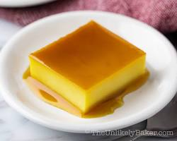

INGREDIENTS
- 1/2 cup granulated sugar
- 1 tablespoon water
- 12 egg yolks
- 1 can (387ml) condensed milk
- 1 can (354ml) evaporated milk
- 1 teaspoon vanilla extract
|

|
PROCEDURE
- Combine sugar and water in a saucepan over medium heat. Swirl the pan occasionally to dissolve the sugar, but avoid stirring directly.
- Cook until the mixture turns golden brown and begins to caramelize. Watch closely to avoid burning.
- Immediately pour the hot caramel into your chosen mold or baking dish, tilting it to coat the bottom evenly. Set aside to cool and harden.
- In a large mixing bowl, whisk together the egg yolks until well combined.
- Slowly whisk in the condensed milk and evaporated milk until smooth.
- Stir in the vanilla extract.
- To ensure a silky smooth texture, strain the custard mixture through a fine-mesh sieve into a clean bowl. This step removes any stray egg whites or lumps.
- Preheat your oven to 350°F (175°C).Place the mold or dish containing the hardened caramel in a larger baking dish.
- Carefully pour the custard mixture into the mold, ensuring it doesn't mix with the caramel.Cover the mold tightly with aluminum foil.
- Pour hot water into the larger baking dish, reaching about halfway up the sides of the mold (bain-marie method).
- Bake for 50-60 minutes, or until a toothpick inserted in the center comes out clean.
- Remove the flan from the oven and let it cool completely in the water bath. Once cool, carefully refrigerate for at least 4 hours, or overnight for best results.
- Run a knife along the edges of the flan to loosen it from the mold. Invert the flan onto a serving plate, revealing the beautiful caramel topping.
- Enjoy chilled!
|